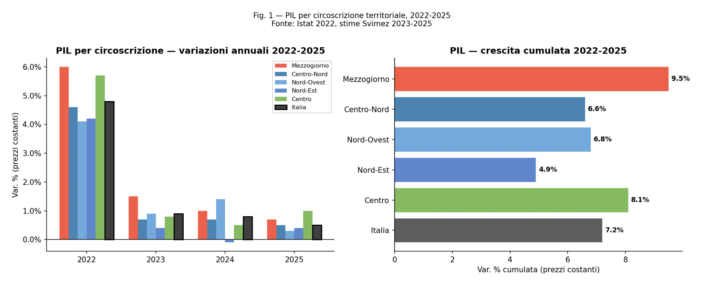
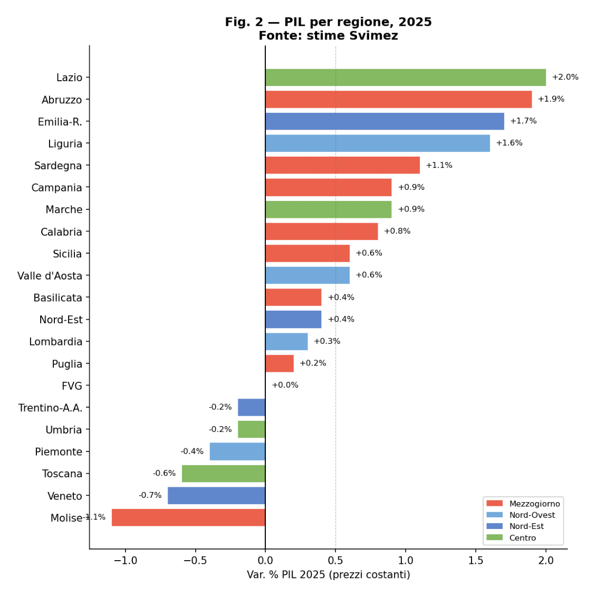
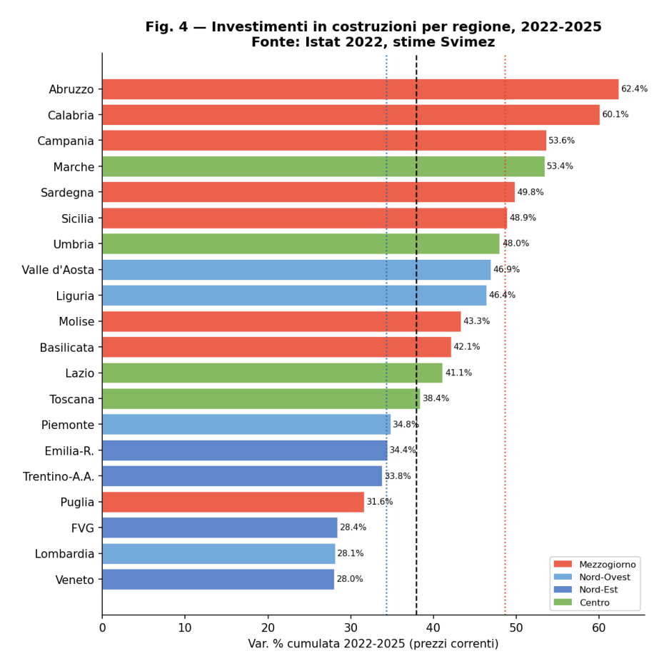
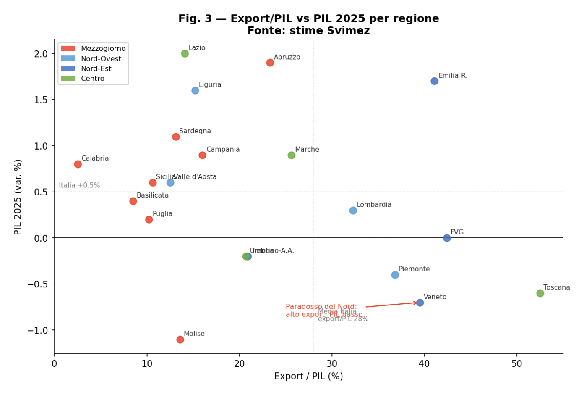
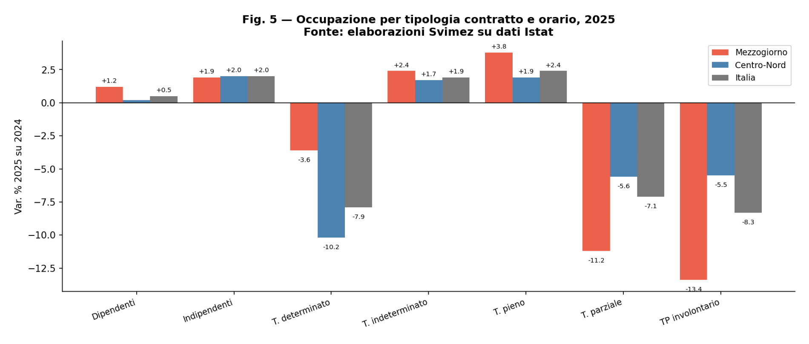

PIL reale, variazioni % — Fonte: SVIMEZ Comunica giugno 2026, Tab. 1
| Paese | 2022 | 2023 | 2024 | 2025 | 2022–2025 cum. |
|---|---|---|---|---|---|
| UE-27 | 3.5 | 0.4 | 1.1 | 1.5 | 6.7 |
| Spagna | 6.4 | 2.5 | 3.5 | 2.8 | 15.9 |
| Francia | 2.7 | 1.4 | 1.2 | 0.8 | 6.3 |
| Italia | 4.8 | 0.9 | 0.8 | 0.5 | 7.2 |
| Germania | 1.8 | -0.9 | -0.5 | 0.2 | 0.7 |
Analisi del Rapporto SVIMEZ Comunica — Giugno 2026
Paolo Volterra ![]()
Nel 2025 il Mezzogiorno cresce per il quarto anno consecutivo più del Centro-Nord (+0,7% vs +0,5%), un primato senza precedenti nelle serie storiche dal 1980. L’analisi del Rapporto SVIMEZ Comunica di giugno 2026 mostra tuttavia che questa performance è interamente spiegata dal ciclo degli investimenti pubblici in costruzioni — Superbonus prima, PNRR poi — e non da un cambiamento strutturale del tessuto produttivo. Il Sud ha cumulato +48,6% di crescita nelle costruzioni in quattro anni, ma le esportazioni calano (-1,2%), la manifattura è stagnante e il mercato del lavoro cresce solo tra gli over 50. I salari reali italiani sono i soli in Europa ancora sotto il livello del 2021. Il documento replica e commenta le nove tavole statistiche del Rapporto SVIMEZ, con tabelle e grafici originali.
Mezzogiorno, PIL regionale, PNRR, Superbonus, investimenti costruzioni, export, mercato del lavoro, salari, SVIMEZ, dualismo territoriale
Questo documento analizza il Rapporto SVIMEZ Comunica del 18 giugno 2026, che offre le prime stime del PIL regionale per il 2025 e una lettura strutturale del ciclo 2022–2025. I dati sono estratti dalle nove tavole statistiche del rapporto (12 pagine). Le elaborazioni originali — grafici e regressioni — sono sviluppate su questa base.
La fonte primaria è il PDF SVIMEZ Comunica — Tendenze e politiche dello sviluppo del Mezzogiorno, giugno 2026, acquisito in Zotero (chiave PXVZ24BT, 29 chunk ingeriti in MEMORIA).
Nel 2025 l’economia italiana cresce dello 0,5%, per il secondo anno consecutivo al di sotto della media UE-27 (+1,5%). Il confronto con i principali partner europei rivela una posizione di coda che si trascina dall’uscita dalla crisi pandemica.
PIL reale, variazioni % — Fonte: SVIMEZ Comunica giugno 2026, Tab. 1
| Paese | 2022 | 2023 | 2024 | 2025 | 2022–2025 cum. |
|---|---|---|---|---|---|
| UE-27 | 3.5 | 0.4 | 1.1 | 1.5 | 6.7 |
| Spagna | 6.4 | 2.5 | 3.5 | 2.8 | 15.9 |
| Francia | 2.7 | 1.4 | 1.2 | 0.8 | 6.3 |
| Italia | 4.8 | 0.9 | 0.8 | 0.5 | 7.2 |
| Germania | 1.8 | -0.9 | -0.5 | 0.2 | 0.7 |
La Spagna è l’unica grande economia dell’area in espansione sostenuta: +2,8% nel 2025, +15,9% cumulato nel quadriennio. La Germania è quasi stazionaria (+0,2%) dopo la recessione del biennio 2023–2024. L’Italia, pur avendo recuperato terreno nel 2022 (+4,8%), ha progressivamente rallentato fino alla stagnazione del 2025.
Il paradosso italiano è che, in un contesto europeo già debole, il Paese sconta la simultanea debolezza di tutti i motori di crescita tradizionali: la domanda estera è frenata dal raffreddamento dei partner commerciali, la domanda interna è compressa dall’erosione del potere d’acquisto dei salari, e gli investimenti privati — esclusa la componente pubblica — mostrano segnali di debolezza.
La novità strutturale del 2025 non è il dato nazionale, ma la sua distribuzione interna. Per il quarto anno consecutivo, il Mezzogiorno cresce più del Centro-Nord: +0,7% contro +0,5%. Un primato che, nelle serie statistiche regionali italiane dal 1980, non ha precedenti di questa durata.
PIL reale per circoscrizione, var. % — Fonte: SVIMEZ Comunica giugno 2026, Tab. 2
| Circoscrizione | 2022 | 2023 | 2024 | 2025 | 2022–2025 cum. |
|---|---|---|---|---|---|
| Mezzogiorno | 6.0 | 1.5 | 1.0 | 0.7 | 9.5 |
| Centro-Nord | 4.6 | 0.7 | 0.7 | 0.5 | 6.6 |
| — Nord-Ovest | 4.1 | 0.9 | 1.4 | 0.3 | 6.8 |
| — Nord-Est | 4.2 | 0.4 | -0.1 | 0.4 | 4.9 |
| — Centro | 5.7 | 0.8 | 0.5 | 1.0 | 8.1 |
| Italia | 4.8 | 0.9 | 0.8 | 0.5 | 7.2 |
Il cumulato 2022–2025 fotografa il salto: +9,5% per il Mezzogiorno contro +6,6% per il Centro-Nord, con un differenziale di quasi tre punti percentuali. Questo ha parzialmente riassorbito il gap accumulato nel decennio precedente (2008–2019), durante il quale il Sud aveva perso terreno in modo sistematico.
Il Nord-Est registra la performance peggiore del quadriennio (+4,9%), penalizzato dall’esposizione ai mercati esteri: Veneto, Emilia-Romagna e Friuli-Venezia Giulia hanno la più alta propensione all’export del Paese, e la stagnazione della domanda mondiale ha pesato in misura più che proporzionale.

Figura 1: PIL reale per circoscrizione — variazioni annue 2022–2025 (var. %)
Il grafico mostra la dinamica evolutiva: tutti i territori convergono verso la stagnazione nel 2025, ma il Sud mantiene un margine positivo. La domanda chiave — cui il prossimo paragrafo risponde — è: cosa c’è sotto questa performance?
La disaggregazione per regione rivela un quadro più frammentato di quanto suggerisca la media di circoscrizione.
VA per settore e PIL per regione, var. % — Fonte: SVIMEZ Comunica giugno 2026, Tab. 3
| Regione | Agric. | Industria | Costruz. | Servizi | PIL 2025 | Cum. 22–25 |
|---|---|---|---|---|---|---|
| Mezzogiorno | 1.0 | 1.2 | -0.1 | 0.5 | 0.7 | 9.5 |
| Abruzzo | 7.1 | 1.3 | 21.9 | -0.6 | 1.9 | 11.8 |
| Molise | 0.8 | -2.0 | -4.3 | -0.8 | -1.1 | 16.6 |
| Campania | 1.4 | 3.3 | 1.5 | 0.2 | 0.9 | 11.3 |
| Puglia | 0.1 | -1.7 | -11.3 | 1.3 | 0.2 | 7.2 |
| Basilicata | -0.6 | 2.9 | 1.4 | -0.7 | 0.4 | 3.8 |
| Calabria | 2.9 | 4.5 | 2.6 | -0.1 | 0.8 | 5.2 |
| Sicilia | -1.4 | -1.0 | -2.6 | 1.0 | 0.6 | 9.4 |
| Sardegna | 1.5 | 3.4 | 1.0 | 0.6 | 1.1 | 12.3 |
| Centro-Nord | -0.9 | 0.1 | 3.4 | 0.2 | 0.5 | 6.6 |
| Nord-Ovest | -0.8 | -0.3 | 4.3 | 0.0 | 0.3 | 6.8 |
| Piemonte | -1.4 | -4.4 | 2.2 | 0.7 | -0.4 | 6.6 |
| Lombardia | -1.2 | 0.8 | 4.6 | -0.3 | 0.3 | 6.4 |
| Liguria | 3.0 | 2.6 | 9.4 | 0.5 | 1.6 | 10.6 |
| Nord-Est | -1.6 | -0.2 | 0.6 | 0.4 | 0.4 | 4.9 |
| Veneto | 3.2 | -0.5 | -1.6 | -1.0 | -0.7 | 3.8 |
| FVG | -3.8 | 4.4 | -13.5 | -0.7 | 0.0 | 3.1 |
| Emilia-Romagna | -6.0 | -0.7 | 7.5 | 2.4 | 1.7 | 5.4 |
| Trentino-A.A. | -1.5 | -1.0 | -0.6 | -0.1 | -0.2 | 8.9 |
| Centro | 0.2 | 1.8 | 5.1 | 0.4 | 1.0 | 8.1 |
| Toscana | -1.7 | -0.7 | 3.0 | -1.0 | -0.6 | 6.6 |
| Umbria | 1.3 | 2.9 | 11.5 | -2.3 | -0.2 | 6.5 |
| Marche | 10.0 | 1.5 | 0.8 | 0.2 | 0.9 | 6.6 |
| Lazio | -0.9 | 4.4 | 6.7 | 1.3 | 2.0 | 9.5 |
| Italia | -0.1 | 0.3 | 2.4 | 0.3 | 0.5 | 7.2 |
Alcune letture regionali degne di nota:
Al Sud, la performance è eterogenea. Abruzzo (+1,9%) e Sardegna (+1,1%) trainano grazie a industria e, nel caso abruzzese, a un boom anomalo delle costruzioni (+21,9% nel 2025, probabilmente concentrato in pochi cantieri di grandi dimensioni). Campania (+0,9%) e Calabria (+0,8%) crescono in modo più omogeneo. Il Molise è l’unica regione meridionale in territorio negativo (-1,1%), con tutti i comparti in contrazione. Puglia (+0,2%) frena vistosamente per il crollo delle costruzioni (-11,3%) e della manifattura (-1,7%).
Al Nord, Veneto è la grande delusione: -0,7%, l’unica grande regione del Paese in recessione nel 2025. Industria e servizi entrambi negativi, export frenato. Piemonte (-0,4%) paga l’industria a -4,4%, riflesso della crisi del comparto automotive. In controtendenza, Emilia-Romagna (+1,7%) e Lazio (+2,0%) — il Centro beneficia del rimbalzo romano trainato dal terziario avanzato e dall’industria (+4,4%).

Figura 2: PIL regionale 2025 — variazione % (barre orizzontali)
Il pattern settoriale è il filo conduttore: le costruzioni sono la principale variabile di differenziazione tra le regioni nel 2025. Dove le costruzioni crescono (o rimangono positive), il PIL tiene; dove crollano (Puglia, FVG, Veneto), il PIL soffre. L’industria è debole al Nord per ragioni esogene (domanda estera); più resiliente al Sud dove le produzioni sono meno esposte ai mercati internazionali.
La spiegazione della crescita differenziale del Sud sta tutta in una sequenza di policy: Superbonus (2022–2023) → PNRR e opere pubbliche (2024–2025). Gli investimenti fissi lordi nel 2025 crescono del +4,1% dopo il rimbalzo del +3,5% del PIL complessivo — di gran lunga la componente di domanda più dinamica.
Investimenti fissi lordi, var. % — Fonte: SVIMEZ Comunica giugno 2026, Tab. 5
| Componente | 2022 | 2023 | 2024 | 2025 | Cum. 22–25 |
|---|---|---|---|---|---|
| Investimenti totali | 13.7 | 11.6 | -2.4 | 4.1 | 28.8 |
| — costruzioni (totale) | 18.6 | 18.6 | -5.8 | 4.1 | 37.9 |
| · abitazioni | 25.2 | 25.5 | -36.4 | -3.5 | -3.6 |
| · fabbricati non res. privati | 15.6 | -4.3 | 57.8 | 8.8 | 89.8 |
| · opere pubbliche | 0.2 | 39.0 | 21.4 | 11.1 | 88.0 |
| Investimenti pubblici (totale) | 13.7 | 12.3 | 17.2 | 10.2 | 64.9 |
La sequenza temporale è inequivocabile. Nel 2022–2023 il Superbonus gonfia le abitazioni residenziali (+25,2% e +25,5% annui). Nel 2024 scatta il crollo delle abitazioni (-36,4%) con la fine degli incentivi, mentre esplodono i fabbricati non residenziali (+57,8%) — cantieri PNRR — e le opere pubbliche prendono velocità (+39% nel 2023, poi +21,4% e +11,1% nei due anni successivi).
Il Sud ha beneficiato di entrambe le fasi in misura proporzionalmente maggiore rispetto al Centro-Nord.
Investimenti in costruzioni per regione, var. % — Fonte: SVIMEZ Comunica giugno 2026, Tab. 6
| Circoscrizione/Regione | 2022 | 2023 | 2024 | 2025 | Cum. 22–25 |
|---|---|---|---|---|---|
| Mezzogiorno | 21.0 | 21.5 | -2.7 | 3.8 | 48.6 |
| Abruzzo | 21.3 | 29.8 | -9.3 | 13.8 | 62.4 |
| Molise | 14.8 | 27.0 | -3.2 | 1.6 | 43.3 |
| Campania | 19.1 | 22.7 | -0.2 | 5.3 | 53.6 |
| Puglia | 21.8 | 16.7 | -4.7 | -2.8 | 31.6 |
| Basilicata | 15.8 | 26.9 | -6.2 | 3.1 | 42.1 |
| Calabria | 19.9 | 26.4 | -2.4 | 8.2 | 60.1 |
| Sicilia | 24.2 | 19.7 | -2.4 | 2.6 | 48.9 |
| Sardegna | 21.7 | 16.7 | 2.9 | 2.5 | 49.8 |
| Centro-Nord | 17.7 | 17.6 | -6.9 | 4.2 | 34.3 |
| Italia | 18.6 | 18.6 | -5.8 | 4.1 | 37.9 |
Sud +48,6% vs Centro-Nord +34,3% nel cumulato 2022–2025: oltre 14 punti di vantaggio. Abruzzo (+62,4%) e Calabria (+60,1%) guidano la classifica meridionale. Puglia (+31,6%) è l’eccezione negativa, con il crollo del 2024–2025 che cancella parte dei guadagni precedenti.
Perché il Sud ha assorbito più costruzioni? SVIMEZ offre una spiegazione strutturale: dove la matrice d’offerta è meno densa — cioè dove il settore privato è più rado — un euro di investimento in costruzioni attiva più produzione in loco. I macchinari, a differenza dei cantieri, attivano produzioni altrove (spesso al Nord o all’estero); i cantieri edilizi sono per definizione radicati nel territorio.

Figura 3: Investimenti in costruzioni per regione — crescita cumulata 2022–2025
Il lato oscuro di questa storia è che si tratta di crescita senza trasformazione strutturale: il PIL sale, ma non si osservano segnali di upgrading produttivo — come emergerà chiaramente dall’analisi dell’export.
L’export è il banco di prova della qualità della crescita. E qui il quadro è desolante per il Mezzogiorno.
Esportazioni per regione, 2025 — Fonte: SVIMEZ Comunica giugno 2026, Tab. 4
| Circoscrizione/Regione | Valore (mln €) | Var. % 2025 | Export/PIL (%) |
|---|---|---|---|
| Mezzogiorno | 64075 | -1.2 | 12.7 |
| Abruzzo | 9956 | 6.9 | 23.3 |
| Molise | 1237 | -3.9 | 13.6 |
| Campania | 22733 | 3.6 | 16.0 |
| Puglia | 9894 | 2.6 | 10.2 |
| Basilicata | 1313 | -17.8 | 8.5 |
| Calabria | 1031 | 10.8 | 2.5 |
| Sicilia | 12012 | -10.8 | 10.6 |
| Sardegna | 5898 | -11.4 | 13.1 |
| Centro-Nord | 567942 | 4.5 | 32.4 |
| Nord-Ovest | 239061 | 2.3 | 31.7 |
| — Piemonte | 61790 | 2.7 | 36.8 |
| — Lombardia | 167082 | 1.8 | 32.3 |
| — Liguria | 9419 | 10.2 | 15.2 |
| Nord-Est | 197334 | 2.0 | 38.2 |
| — Veneto | 79973 | -0.2 | 39.5 |
| — FVG | 20271 | 17.8 | 42.4 |
| — Emilia-Romagna | 84254 | 1.3 | 41.1 |
| Centro | 131547 | 13.2 | 27.3 |
| — Toscana | 76312 | 21.3 | 52.5 |
| — Lazio | 35994 | 9.6 | 14.1 |
| — Marche | 13430 | -7.6 | 25.6 |
| Italia | 632017 | 3.9 | 28.0 |
Il divario strutturale è abissale: export/PIL al Sud = 12,7%; al Centro-Nord = 32,4% — uno scarto di venti punti percentuali che riflette due modelli di sviluppo diversi. Il Sud è un’economia chiusa, orientata al mercato interno e ai consumi locali; il Centro-Nord è aperto ai mercati globali.
Nel 2025 questo dualismo si accentua: export Sud -1,2% vs export Italia +3,9%. Il Mezzogiorno non partecipa nemmeno alla debole ripresa dell’export nazionale. I crolli di Basilicata (-17,8%, probabilmente petrolchimica e automotive), Sicilia (-10,8%) e Sardegna (-11,4%) non sono compensati dai progressi di Calabria (+10,8%, da base irrisoria — export/PIL 2,5%) e Campania (+3,6%).

Figura 4: Export/PIL e variazione export 2025 — scatter per regione
Il paradosso del Nord: le regioni a più alta propensione all’export — Veneto (39,5%), FVG (42,4%), Emilia-Romagna (41,1%) — sono quelle che crescono meno o arretrano nel 2025. La citazione di SVIMEZ fotografa il meccanismo: “La debolezza dell’export è diventata la principale variabile che determina il tono della congiuntura in presenza della cronica debolezza dei salari.” Il Nord si trova in una trappola: senza export (domanda estera debole) e senza salari reali (domanda interna compressa), mancano entrambi i driver di crescita.
La Toscana rappresenta un’anomalia istruttiva: export +21,3% ma PIL -0,6%. La crescita delle esportazioni non si trasmette al prodotto interno — probabilmente per effetto di reesportazioni o di specializzazioni ad alto valore aggiunto ma bassa intensità di lavoro locale (gioielleria, moda, farmaceutica).
Il mercato del lavoro nel 2025 mostra segnali che possono essere letti in due modi diametralmente opposti — positivi in superficie, preoccupanti in profondità.
A livello nazionale, gli occupati sfiorano i 24,1 milioni (+185.000 rispetto al 2024, +0,8%). Il Mezzogiorno cresce del +1,4%, per il quinto anno consecutivo sopra il Centro-Nord (+0,6%). Calabria (+3,8%), Campania (+2,6%) e Basilicata (+1,6%) guidano le performance meridionali.
Occupazione per tipologia contrattuale, 2025 — Fonte: SVIMEZ Comunica giugno 2026, Tab. 9
| Indicatore | Mezzog. var. ass. (000) | Mezzog. var. % | Centro-Nord var. % | Italia var. % |
|---|---|---|---|---|
| Dipendenti | 59.3 | 1.2 | 0.2 | 0.5 |
| Indipendenti | 28.5 | 1.9 | 2.0 | 2.0 |
| Tempo determinato | -35.4 | -3.6 | -10.2 | -7.9 |
| Tempo indeterminato | 94.7 | 2.4 | 1.7 | 1.9 |
| Tempo pieno | 205.6 | 3.8 | 1.9 | 2.4 |
| Tempo parziale | -117.8 | -11.2 | -5.6 | -7.1 |
| Part-time involontario | -96.2 | -13.4 | -5.5 | -8.3 |
In superficie i dati sono incoraggianti: il tempo indeterminato cresce (+2,4% al Sud, +1,9% in Italia), il tempo determinato cala (-3,6% al Sud, -7,9% in Italia), il part-time involontario si riduce (-13,4% al Sud). Un quadro di stabilizzazione del lavoro.
Ma la disaggregazione per fascia di età rovescia la lettura:
Occupazione per fascia d'età, 2025 — Fonte: SVIMEZ Comunica giugno 2026
| Fascia d'età | Variazione % 2025 | Lettura |
|---|---|---|
| Under 35 | -2.0 | Perdita netta — generazione esclusa |
| 35–49 anni | -1.3 | Perdita netta — lavoratori centrali in calo |
| Over 50 | 4.2 | Crescita — effetto riforme pensionistiche |
L’occupazione cresce esclusivamente tra gli over 50 (+4,2%), che lavorano più a lungo per effetto delle riforme pensionistiche. Cala tra le fasce 35–49 (-1,3%) e tra gli under 35 (-2,0%). Si tratta di un mercato del lavoro che si stabilizza per i già-inseriti e che non apre nuovi spazi per i giovani.
La conferma viene da un dato ancor più preoccupante: la quota di non occupati che trova lavoro è dimezzata dal 2021 al 2025, passando dal 12,3% al 5,9%. I nuovi entranti che accedono al mercato del lavoro trovano per oltre due terzi un contratto vulnerabile — termine e/o part-time involontario.

Figura 5: Occupazione per tipologia — variazioni assolute e percentuali 2025
Il part-time involontario strutturale al Sud rimane allarmante: 49,1% degli occupati a orario ridotto, contro una media europea del 16,7% — quasi il triplo. Nonostante il calo nel 2025 (-13,4%), la distanza dall’Europa rimane abissale e riflette una struttura produttiva che non è in grado di assorbire lavoro a tempo pieno su base stabile.
La dimensione salariale è quella in cui il ritardo italiano è più acuto e più direttamente misurabile rispetto ai partner europei.
Le retribuzioni mediane nel settore privato extra-agricolo mostrano un gap strutturale Nord-Sud che persiste su tutte le categorie contrattuali.
Retribuzioni mediane annue settore privato extra-agricolo, 2023 — Fonte: SVIMEZ Comunica giugno 2026, Fig. 1
| Categoria lavoratori | Nord (€/anno) | Mezzogiorno (€/anno) | Gap Nord-Sud |
|---|---|---|---|
| Standard | ~30.000 | ~25.000 | ~5.000 |
| Quasi-standard | ~15.000 | ~12.000 | ~3.000 |
| Vulnerabili | ~6.500 | <6.000 | ~500–1.000 |
| Totale | ~24.000 | ~21.000 | ~3.000 |
Per i lavoratori standard (contratti stabili e full-time), il gap è di circa 5.000 euro annui, equivalente a oltre un mese di lavoro. I lavoratori vulnerabili al Sud accumulano in media 48 giornate senza copertura contrattuale nel corso dell’anno — un mese e mezzo di reddito mancante.
Ma il problema salariale italiano non è solo geografico: è un problema nazionale nel confronto europeo.
Potere d'acquisto e salari nominali, 2021–2025 — Fonte: SVIMEZ Comunica giugno 2026, Fig. 2
| Paese | Var. potere d'acquisto 2021–2025 (%) | Crescita nom. salari 2021–25 (% annua) |
|---|---|---|
| Spagna | 1.6 | 4,7 |
| Germania | 1.0 | 5,0 |
| Francia | 0.0 | 4,0 |
| Grecia | -2.0 | n.d. |
| Italia | -4.0 | 3,2 |
| — Centro-Nord | -3.6 | — |
| — Mezzogiorno | -4.3 | — |
L’Italia è il solo grande paese europeo con salari reali ancora sotto il livello del 2021 (-4,0%). La Germania e la Spagna hanno già recuperato e superato il livello pre-inflazione; la Francia è sostanzialmente stazionaria. I salari nominali italiani sono cresciuti del 3,2% medio annuo — meno della metà della Germania (+5,0%) e insufficienti a coprire l’inflazione del periodo.
Il Sud paga il doppio prezzo: erosione salariale maggiore (-4,3% vs -3,6% al Centro-Nord) e base di partenza più bassa. Il recupero del 2025 (+3,1% le retribuzioni orarie) è reale ma va interpretato con cautela: in parte riflette un aumento dei salari effettivi, in parte la riduzione meccanica dell’incidenza del part-time (che sale la media oraria). Quattro anni di erosione non si recuperano in un anno.
L’analisi del Rapporto SVIMEZ Comunica di giugno 2026 consente di articolare tre conclusioni principali, ciascuna con implicazioni di policy distinte.
Prima conclusione: il Sud cresce per ragioni non strutturali. Il differenziale di crescita Mezzogiorno–Centro-Nord (4° anno consecutivo) è interamente spiegabile con il ciclo degli investimenti pubblici in costruzioni: Superbonus 2022–2023, PNRR e opere pubbliche 2024–2025. Le costruzioni hanno alta intensità territoriale (“local content”) e si riflettono rapidamente sul PIL locale, a differenza degli investimenti in macchinari che attivano produzioni altrove. Senza il PNRR, il differenziale si azzererebbe o invertirebbe.
Seconda conclusione: la crescita del Sud non è accompagnata da upgrading produttivo. Export in calo (-1,2% vs +3,9% nazionale), manifattura stagnante, part-time involontario strutturalmente triplo della media europea: questi indicatori segnalano che il PIL cresce per effetto demand-side, non per aumento della competitività e della capacità produttiva. Il Sud partecipa alla politica economica ma non ne trasforma il tessuto produttivo.
Terza conclusione: il problema salariale è nazionale, non solo meridionale. L’Italia è il fanalino di coda europeo nel recupero salariale. La trappola del Nord (senza export e senza salari reali non ci sono driver di crescita interni) e quella del Sud (mercato del lavoro che non apre spazi per i giovani, vulnerabilità contrattuale strutturale) si sovrappongono a un deficit salariale che affligge l’intero sistema-paese.
Durata del PNRR-effect: quando si chiude il ciclo PNRR (2026–2027), il Sud manterrà il vantaggio o tornerà in divergenza? I modelli bridge-equation sviluppati dalla letteratura (Linzenich & Meunier 2025) suggeriscono un deterioramento rapido senza sostituzione del motore di crescita.
Qualità della crescita: il PIL Sud cresce ma l’export no — c’è upgrading produttivo o solo effetto demand-side? La risposta richiede dati di bilancio per impresa (Cerved A2.9) incrociati con i dati ISTAT di contabilità regionale.
Il lavoro vulnerabile come struttura: il 49% di part-time involontario al Sud persiste anche quando i mercati del lavoro migliorano formalmente. Questa rigidità strutturale richiede un’analisi delle transizioni individuali, non dei soli dati aggregati.
Salari vs inflazione: quando si chiude il gap europeo? Con la dinamica attuale (+3,1% nominale vs inflazione in rientro) il recupero potrebbe avvenire entro il 2026–2027, ma la base di partenza più bassa al Sud ritarda il raggiungimento del livello 2021.
Nota metodologica: tutte le tavole sono replicate dal PDF SVIMEZ Comunica (giugno 2026) e non validate contro le serie originali ISTAT (dataflow 45_61 e 45_63) per limitazioni di accesso all’API ISTAT al momento della redazione. Una validazione formale con calcolo del MAPE per tabella è prevista nella fase successiva del progetto.
Trasparenza sull’uso dell’intelligenza artificiale
L’uso di strumenti di intelligenza artificiale generativa è dichiarato esplicitamente in quanto parte del processo di lavoro seguito nella redazione del presente documento. Tali strumenti sono stati impiegati a supporto della lettura, della sintesi, della riorganizzazione argomentativa e della revisione testuale, sempre nell’ambito di un processo pienamente controllato dall’autore.
La responsabilità per le fonti utilizzate, le analisi condotte, le verifiche effettuate, le interpretazioni proposte e le conclusioni formulate resta interamente in capo all’autore.
L’intelligenza artificiale è stata utilizzata come ambiente di supporto cognitivo ed editoriale, non come fonte primaria, autore autonomo o sostituto del giudizio critico.